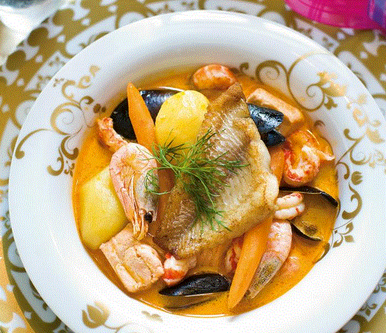

Bouillabaisse
6 annosta
Valmisteluaika 30 min
Kypsymisaika 30 min
Valmistusaineet
- 1/4 dl oliiviöljyä
- 4 kpl silputtua valkosipulin kynttä
- 7,5 dl kuivaa valkoviiniä
- 500 g sinisimpukoita
- 1 kpl silputtu sipuli
- 1/4 dl tomaattipyreetä
- 1/2 tl piparjuuritahnaa
- 1 rkl hienosokeria
- 10 dl kalalientä
- 1/2 dl kalafondia
- 400 g kuorittua ja paloiteltua perunaa
- 120 g porkkanaa
- 1,5 dl ruokakermaa
- 2 rkl voita
- 1/2 tl suolaa
- 3 g sahramia
- 3 kpl laakerinlehtiä
- 3 rkl persiljaa
- 1 tl kokonaisia mustapippureita
- 300 g lohta kuutioina
- 100 g katkarapuja
- 100 g jättikatkaravun pyrstöjä
- 500 g kuhafilettä paloina
- 1 rkl tuoretta tilliä silputtuna
Valmistusohje
Aloita ranskalaisen kala-äyriäiskeiton valmistus kaatamalla isoon kattilaan oliiviöljy ja puolet silputusta valkosipulista. Kuumenna ja anna aromeiden avautua. Kaada joukkoon reilut 4 dl valkoviiniä. Kun seos kiehahtaa, lisää joukkoon hyvin pestyt sinisimpukat ja keitä, kunnes simpukat avautuvat. Nosta simpukat reikäkauhalla kulhoon odottamaan. Valmista seuraavaksi aromikas liemi, eli kuullota isossa kattilassa tilkassa oliiviöljyä loput hienonnetusta valkosipulista ja sipulisilppu. Lisää joukkoon tomaattipyree, piparjuuritahna ja sokeri. Lisää 3 dl valkoviiniä ja anna sen hieman kiehua kasaan. Kaada joukkoon kalaliemi ja kala- tai hummerifondi sekä lisää paloitellut perunat. Anna kiehua miedolla lämmöllä, kunnes perunat ovat puolikypsiä. Lisää joukkoon pikkuporkkanat tai ohuita porkkanasuikaleita. Kaada kerma pieneen kattilaan ja anna sen kiehua kasaan niin, että kermasta tulee paksua. Kaada kerma isoon kattilaan, lisää voi ja mausta liemi. Lisää lohikuutiot ja anna niiden kypsyä. Lisää lopuksi keiton joukkoon kuorelliset katkaravut sekä jokiravun pyrstöt ja anna niiden lämmetä. Nosta keittokattila sivuun. Ruskista lopuksi kuhafileet paistinpannulla kullanruskeiksi ja rapeiksi. Kokoa annos: nosta lientä lautasen pohjalle, lisää kasviksia, lohta, simpukoita, katkarapuja, jokiravun pyrstöjä, ja lopuksi paistettu kuhafilee. Koristele bouillabaisse tuoreella tillillä.